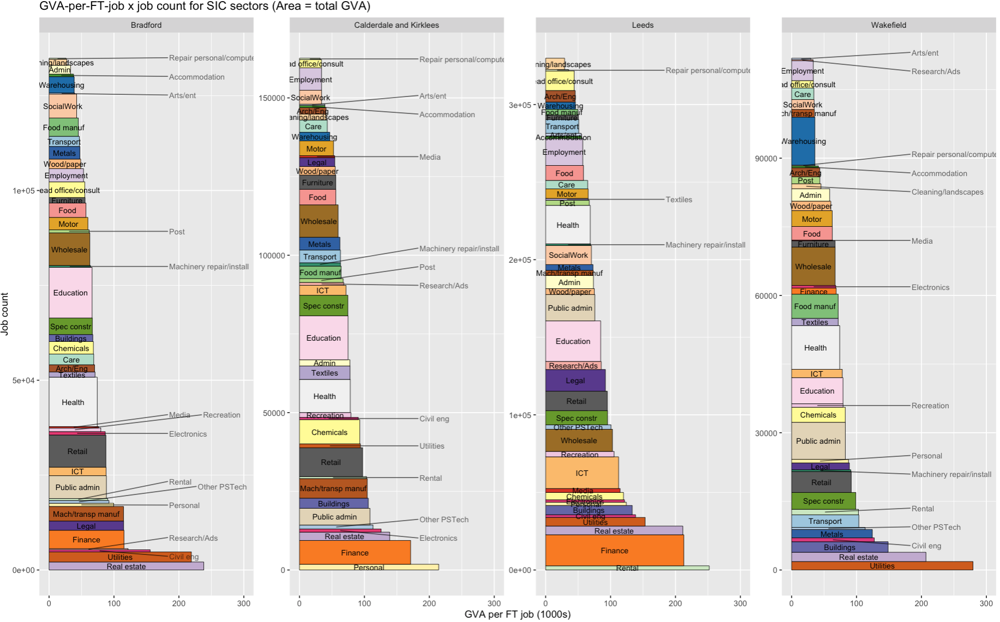

In these online slides, I’ve combined a step-by-step introduction to using R and RStudio online with an interesting way to look at regional productivity data.
The final output looks like this for the four ITL3 zones in West Yorkshire. What you’re looking at:
The area of each rectangle is the total output of that sector in GVA (relative to each place - the jobcount axis varies across each sub-plot). If two blocks are the same size in different places, they make up the same proportion of GVA in both, even if their pound value differs.
Sectors are stacked up in order of productivity (here defined as GVA per full-time job).
Each rectangle is made up of full-time job count on the vertical and GVA per job on the horizontal. The GVA per job axis is fixed, so each place is directly comparable.
We can see, for example, how finance’s total output comes from very high productivity more than large job numbers.
And also (in Wakefield) that there are a very large number of jobs in warehousing, but their average output is at the lower end.
It’s all in a self-contained R script that you can just drop into RStudio via posit.cloud’s tidyverse template (see this slide) and run as is. Here’s how to get it from Github and run it line by line. (You can of course also run it in R on your own machine - you’ll need Tidyverse installed).
Those slides explain each step – here, I want to yabbit about two other things:
- The idea I’m trying to test with these slides: a way of making R and data like this more useable and reproducible and accessible.
- A few notes on the theory and data sources, and the prior wrangling stages.
The idea
This is an experiment. I’m testing ways to make the on-ramp for data analysis using R as easy as possible. Using R through posit.cloud in the browser immediately removes several complexity steps - open an account, open R, and you’re ready to go.
I’ve designed the slides so that, once you’ve run through the set up, you should be able to make a version of the same plot for whatever geographies you want (jump to this slide to skip all the R intro stuff and just make the plot). I imagine and hope it might be possible to go from zero R knowledge to a plot for your own region by the time the slides are done. And that could be something to build on - more self-contained, reproducible chunks of analysis and visualisation, reducing wheel reinvention.
That at least is the nice theory. I’ve run a couple of workshops using this approach, but those were only tasters. I could do with more feedback on what works and what doesn’t.
If you do have a go at this, I’d really appreciate any thoughts, successes, failures, anything learned from looking at this data for your own region.
The GVA factory method…
Let’s just mention Giles Wilkes’ point about the ‘GVA factory model’. Dividing GVA by jobs (or indeed by hours, as official productivity measures do; R example in the slides here!) I don’t think is the ‘horribly obvious maths’ he’s complaining about - instead, that’s what can happen if we treat these numbers in the way he parodies:
If you have three sectors, A, B and C, each with 10 workers, and their productivities are £100/worker, £50/worker and £20/worker , your strategy is to shift workers from C to B and A. For every worker you shift from C to A, you make £80 more a year – for free! Stop cutting hair, start making microchips!
The energy or telecoms sectors are prime examples: huge apparent output per worker, but their huge capital intensity isn’t directly visible in simple GVA x jobs data. GVA also spreads across value chains, accumulating in e.g. Apple’s Cupertino campus, not in the places iphones are assembled.
Fundamentally, output per worker going up is what we want - it directly measures how wealthy everyone is on average. ( ‘This is what we want’ is very open to question, though I think it still stands even if e.g. we impose ‘constrain so planetary boundaries are respected’).
But the streetlight effect is always present. Looking where ‘output per worker’ shines a light may lead us to badly misinterpret the pachyderm - that’s what I take Wilkes’ point to be. Do we have any option except to remain cautious and vigilant though? There isn’t any dataset or approach that can replace our need to think about how we use it.
That said, actually laying out ways to think about it in more detail would probably be useful…
Anyway, enough here to keep us busy. Here’s some data notes.
Data notes
The ‘bres.gva.2d’ dataframe that the script loads in contains linked ONS regional GVA x sector data and BRES full time job count data.
That’s processed here - if and when I make the data wrangling more legible, I’ll edit this and pretend it was well-organised all along. The prior steps include downloading/wrangling the latest (2023) GVA data here and bulk downloading the latest (2024) BRES data here.
The pre-prepared data has a 3-year moving average applied - BRES data is volatile. So the plot is the 2021-23 average. It’s a better recent-history picture using that (edit the year in the script to look back as far as 2015-17).
There are some fun1 steps to harmonise the two:
The GVA data uses the 2025 ITL3 definitions. BRES doesn’t have those yet. But you can use local authorities from BRES - they mostly nest into 2025 ITL3, so can be summed where they don’t quite match. I made a function for checking geographical matches like this and getting automatic groupings for adding up jobs. It also tells you where things don’t nest - Arran in Scotland is the only tricky overlap that differs.
(There’s also one spelling mistake in BRES geographies that stops a correct match - “Rhondda Cynon Taff” should be “Rhondda Cynon Taf”. Make of that what you will.)
The regional GVA data has bespoke sector SIC code groupings - a different number for every different geographical level, with ITL3 having the fewest (disclosure reasons). So the BRES data has been binned into that same shorter sector list - 45 in total, though I’ve removed ‘households’ and ‘membership organisations’ as neither are present in BRES. I’ve then made some shorter names for nice plots.
That’s it! Any questions/issues, let me know at d dot olner at gmail dot com or message me on LinkedIn.

Footnotes
AAAAAARGH↩︎